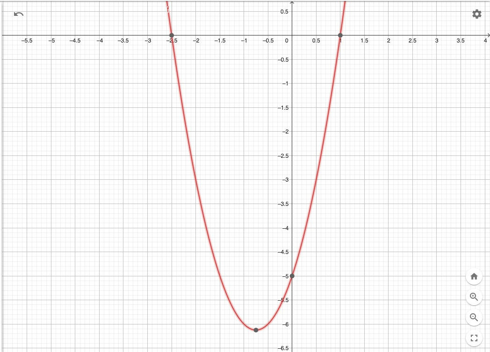

TUGAS BESAR KALKULUS
PERTIDAKSAMAAN KUADRAT
UNIVERSITAS DIAN NUSANTARA CIBUBUR
Pengertian
Pertidaksamaan kuadrat adalah pernyataan matematika yang menghubungkan ekspresi kuadrat sebagai kurang dari atau lebih besar dari yang lain. Pertidaksamaan kuadrat adalah suatu bentuk pertidaksamaan yang memuat variabel dengan derajat tertinggi dua.
Pertidaksamaan kuadrat ditandai dengan pengunaan tanda pertidaksamaan seperti lebih dari (>), lebih dari sama dengan (≥), kurang dari. atau kurang dari sama dengan (≤). Di mana variabel pada pertidaksamaan kuadrat memiliki pangkat tertinggi sama dengan dua. Solusi dari suatu pertidaksamaan kuadrat berupa suatu himpunan penyelesaian. Cara menentukan himpunan penyelesaian diawali dengan menentukan akar-akar dari harga nol dari pertidaksamaan yang akan diselesaikan. Selanjutnya dilakukan pengujian daerah dan menentukan himpunan penyelesaiannya.
Langkah – langkah menentukan himpunan penyelesaian pertidaksamaan kuadrat :
1. Menentukan akar-akar dari pertidaksamaan kuadrat yang memenuhi harga nol
2. Membuat garis bilangan yang sesuai hasil pada nomor 1
3. Menentukan titik uji
4. Menentukan tanda untuk masing-masing daerah penyelesaian
5. Menentukan himpunan penyelesaian
Menentukan Akar-Akar Pertidaksamaan Kuadrat
Langkah pertama untuk menentukan himpunan penyelesaian pertidaksamaan kuadrat adalah menentukan akar-akar pertidaksamaan kuadrat. Pada bagian awal telah disinggung bahwa cara menentukan akar-akar pertidaksamaan kuadrat sama dengan cara menentukan akar-akar persamaan kuadrat. Perbedaannya hanya dengan mengambil harga nol dari soal pertidaksamaan kuadrat yang diberikan.
Cara mengambil nilai nol dari pertidaksamaan kuadrat hanya dengan cara mengganti tanda pertidaksamaan menjadi tanda sama dengan. Sehingga diperoleh bentuk sementara berupa persamaan kuadrat. Sebagai contoh, perhatikan cara mengambil harga nol dari pertidaksamaan berikut ini.
ax2 + bx + c ≤ 0 dengan ax2 + bx + c = 0
jadi, tanda (≤) diganti dengan tanda sama dengan (=).
Selanjutnya, cari akar-akar yang memenuhi persamaan kuadrat tersebut. Cara menentukan akar-akar persamaan kuadrat dapat menggunakan metode pemfaktoran, rumus abc, atau metode melengkapkan kuadrat sempurna.
Setelah mendapatkan akar-akar persamaan kuadrat yang memenuhi. Buatlah garis bilangan dan menentukan nilai pada masing-masing daerah. Nilai yang dimaksud di sini dapat berupa nilai positif (+) atau negatif (–).
Batas pada Garis Bilangan dan Cara Menentukan Tanda pada Masing-Masing Daerah
Misalkan nilai akar – akar yang diperoleh dari perhitungan sebelumnya adalah a dan b. Maka garis bilangan yang dapat dibentuk dapat dilihat seperti gambar di bawah.

Setelah dapat membentuk daerah garis bilangan seperti pada gambar di atas, berikutnya adalah menentukan nilai pada masing-masing daerah. Caranya adalah dengan mengambil satu titik uji pada suatu daerah.
Untuk mempermudah perhitungan ambil titik uji x = 0
Hasil dari titik uji menunjukkan nilai yang mewakili keseluruhan daerah tersebut. Untuk daerah yang lain, biasanya akan bergantian. Maksudnya, jika hasil titik uji menghasilkan daerah positif maka daerah sebelahnya adalah kebalikannya. Begitu juga dengan kondisi sebaliknya

Namun terdapat pengecualian ketika ada akar kembar hasil dari penentuan akar-akar persamaan kuadrat. Tandanya mengikuti daerah sebelahnya. Perhatikan ilustrasi pada gambar di bawah.

Menentukan Himpunan Penyelesaian Pertidaksamaan Kuadrat
Hasil dari daerah yang memenuhi pertidaksamaan kuadrat biasanya disajikan dalam bentuk himpunan. Berikut ini adalah tabel cara membaca himpunan penyelesaian dari garis bilangan yang diberikan secara umum.
contoh soal
grafik nya

dalam bentuk geogebra nya
My Biodata
| Nama |
: Elia Eva Setyawati |
| NIM |
: 411221114 |
| Falkutas |
: Teknik dan Informatika |
| Prodi |
: Teknik Informatika |
| Mata Kuliah |
: Kalkulus |